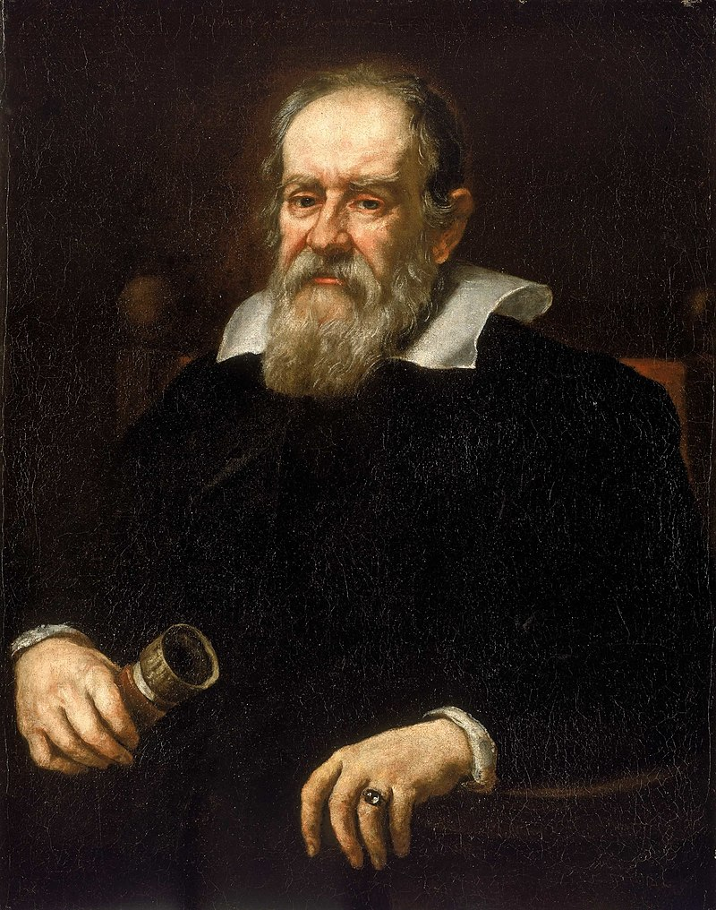

Michael Faraday
A integrante Sarah junto de sua dupla realizaram uma pesquisa e uma apresentação do Físico Michael Faraday, com slides e o experimento: Gaiola de Faraday
Nada é maravilhoso demais para ser verdade.
Galileu Galilei
Os membros Danubia e Andrey junto a seu grupo realizaram um pesquisa e apresentação do Físico Galileu Galilei, com slides e o experimento: Queda de Dois Corpos.

Todas as verdades são fáceis de entender uma vez que são descobertas; o objetivo é descobri-las
Isaac Newton
O integrante Adriel junto de seu grupo realizaram uma pesquisa e uma apresentação do Físico Isaac Newton, com slides e o experimento forma de vídeo: Roleta de Cores